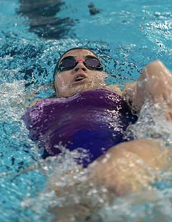
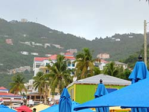
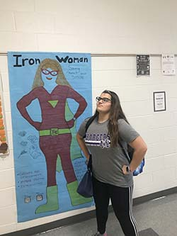

Swimming with Brooke
I Have been a competive swimmer for 10 years . I swim for a competive club team and my high school swim team. I usually have swim meet every other week. My best events are the 200 free and 500 free. My best stroke is butterfly but i am not a huge fan of the stroke becasue it is very tiring. I have swim pratice almost everyday and I spend a large portion of my time at the pool.
I enjoy spending time at the pool with my friends and going to pratcie but the actaul swimming part of pratcie is honesly unmotivatiing to do. The ironic thing about me with swimming is that i acually hate getting wet and hate the water. I wish i still had the same passion for swim as i did years ago when i first started. Now I am at the point were I am just swimming to swi.
Photography with Brooke
I Love Photography and traviling. For Christmas a couple years ago i got a camera and ever since then I have found a love for taking pictures of nature and the world around me. I also like being able to take pictures of my friends and family.
I really enjoy taking photos of people doing actvities and sports. My sister plays tennis and whenever she has a game I love to go to them to take some action shots of her. It boost up my confidence when i get good pictures and she likes them. One day i hope to be able to travel to a bunch of diffrent countries and take pictures of cool landmarks of that country!
School and Spare Time with Brooke
School takes up so much time and is boring!I feel like I spend most of my time and life at school. Even though I enjoy being able to see my friends at school I hate all the work that comes with it. I spend so much of my time once school is out doing homework not even being able to do other stuff.
When I do I have time to do other thing. I really enjoy biking and playing with cards along with magic card tricks. Overall My spare time is pretty limited becasue of swim school and then finding time for myself and relaxation. I do really enjot watching Netflix and Disney Plus if I have extra time though!